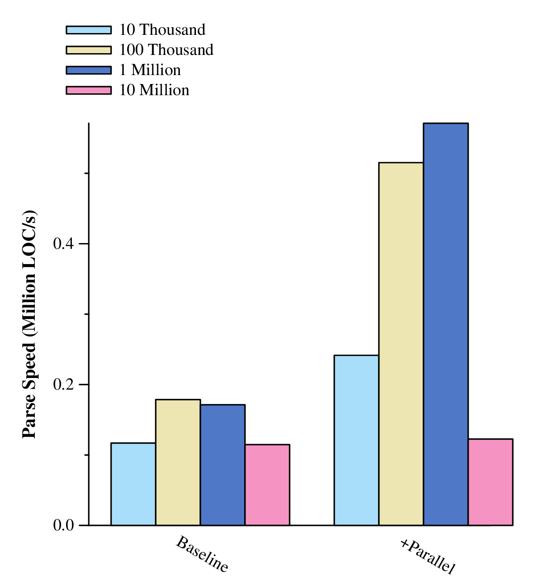
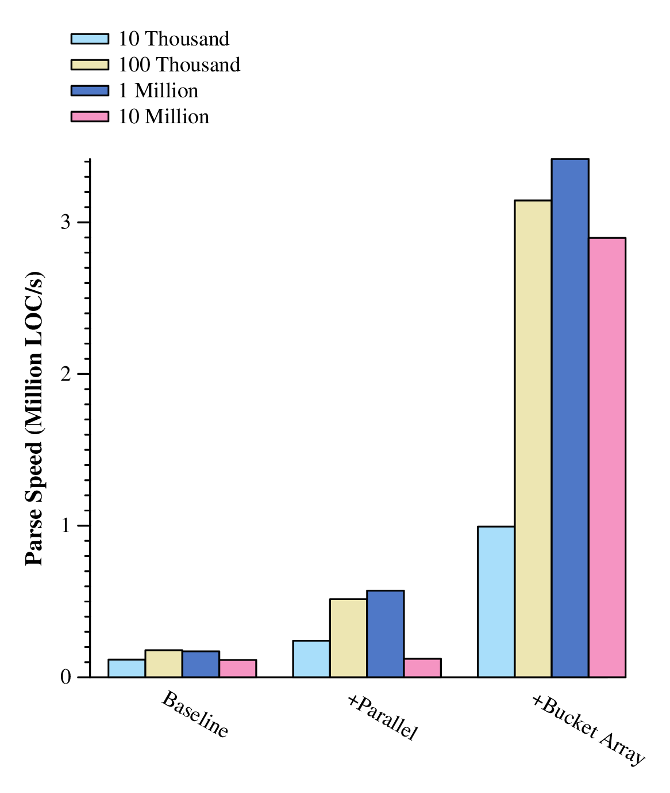
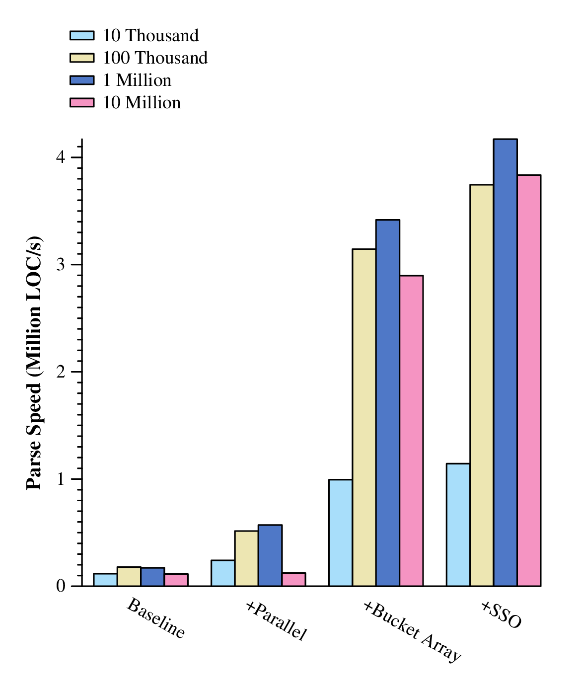
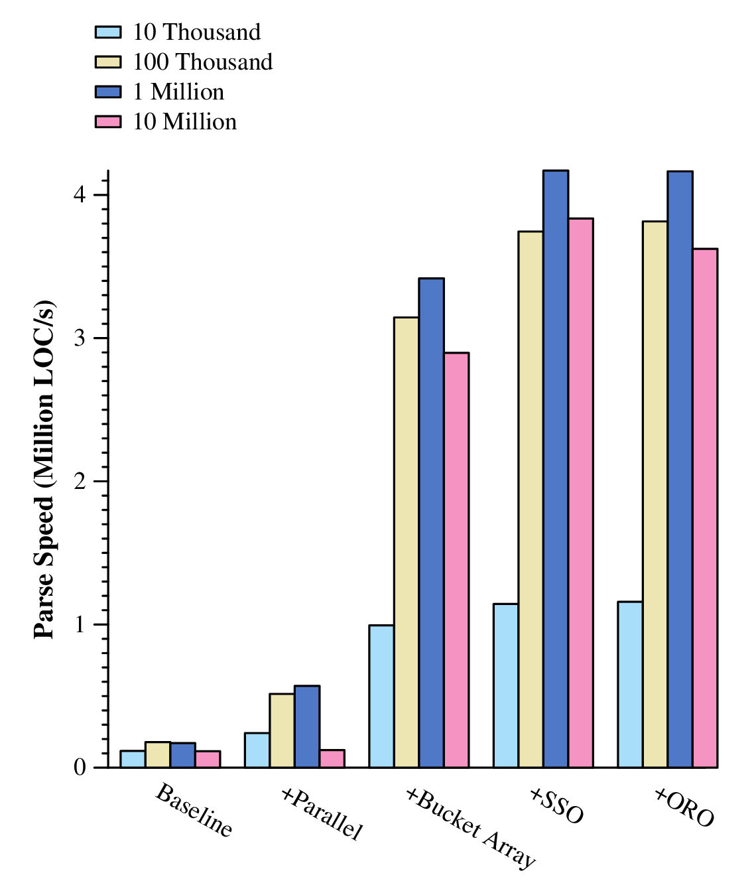

The bJou programming language is in the process of self-hosting its compiler. The language has reached a point of capability and stability that enables us to write complicated programs (like its own compiler) in it. This is a good opportunity to stress test the language and make sure its features, or lack thereof, feel like the right decisions.
Now, some people don't fully realize this, but computers are FAST, and so I want bJou's new compiler to be as fast as possible to provide the best experience for people who write code in bJou. The usual first step to writing a compiler is to implement the part responsible for reading source files, tokenizing their contents (also called lexing or scanning), and parsing the tokens to create an internal data structure that represents all of the little pieces that make up the structure of a user's program. This is also the time when the compiler does things like syntax checking. While parsing is rarely the speed bottleneck of compilers, I think it's important to take the time and effort to make every part of this new compiler as fast as I can make it.
With that said, I set this goal: a user should be able to run the parser on a million lines of code and have it checked for correct syntax in one second or less. To put that into perspective, on my machine (2013 MacBook Pro, 2.3GHz Intel i7, 16GB DDR3), clang parses roughly 50,000 LOC/s (lines of code per second), go fmt churns through about 200,000 LOC/s, and bJou's bootstrapping compiler parses ~300,000 LOC/s.
The rest of this post discusses some of the implementation techniques I used to achieve our goal (SPOILER ALERT: we end up doing way better than 1 million LOC/s).
bJou's bootstrapping compiler's parser is actually pretty fast, so I decided to mostly start with the same basic structure. We use a hand-written, recursive descent parser that uses a precedence climbing method for expressions. Additionally, there is no lexing phase -- tokenization is done in-line with parsing because the parser can generally be smarter about what kind of token to look for next. One major difference is that the bootstrapping compiler (written in C++) represents the Abstract Syntax Tree (AST) as nodes allocated on the heap with pointers to their children. It also relies heavily on runtime polymorphism. This new compiler takes a different approach and uses bJou's sum types (also called tagged/discriminated unions) instead of inherited interfaces. The advantage of this is that all nodes are now the same size and patching the AST becomes much easier. There may also be benefits related to prefetching, cache locality, and less fragmentation in the heap (although, this last point is less relevant later on). The type declaration for our AST type ends up looking something like this:
type ast = ( integerliteral | ifstmt | ...more node kinds here... | procdef )
So, let's look at the results for this first iteration. Some things to note when looking at this data:
175,000 LOC/s isn't bad, but we're far off from our goal. Parsing one file has no influence on the parsing behavior of another file, so we'll explore the inherent parallelism first.
Right now, we're parsing slower than the bootstrapping compiler, which won't do. The bootstrapping compiler uses threads to increase speed by launching parse threads in batches of N files or less where N is the number of available hardware threads. This is better than parsing the files in sequence, but there is a clear downside: if N - 1 of the files are tiny and the remaining file is large, the N - 1 threads will be sitting idle waiting for the huge file to finish. Our new compiler will do better by using what's called a thread pool. This will create N threads that will continuously pull jobs from a job queue and execute them. We'll use the threadpool.bjou bJou module:
using import "thread.bjou" using import "threadpool.bjou"And the basic process will look like this:
pool := threadpool.create(thread::hw_threads()) ... # When we encounter a file to parse: f := frontend::open_file(path, search_paths: true) p := async_parser.create(f) pool.add_task(async_parser_wrapper, p)
Using this method will ensure that all hardware threads are always busy churning away on files. Here are our new speeds:
Nice, over 2x speedup! Still not good enough though, not to mention that the 10 million line input size didn't benefit at all. There must be some bottleneck killing us somewhere.. Time to break out the profiler.
Profiling our parser using the million line input gives us a pretty flame graph that you can look at and explore here. As an exercise, look and see how many of the peaks end in calls to malloc. The answer is a lot. Now notice the really fat section at the end for a procedure called transfer_to_fe and how much time it's taking. Hmmm... Let's unpack what the profiler is telling us starting with malloc.
Using an allocator like malloc is a relatively expensive operation -- even more so when it results in a system call like sbrk or mmap. Unfortunately, our profile shows that we are doing this all the time. This makes sense though given how we've structured our parser. Every time we create a new node in the AST we allocate space for it and allocate the initial slab for the dynamic array that holds its children. Calling malloc no less than two times per new node is slowing us down substantially. To speed up our parser, we need to try to limit allocations as much as possible.
Now what about transfer_to_fe? transfer_to_fe is a procedure that the threaded parsers use to move all of the stuff that they've parsed over to the main AST in the front end (fe). The profile shows us that this procedure is taking a lot of time and that most of that time is spent in memmove (copying data). The slowness of this procedure compounds because this is one of the only places in the parsing code that uses a mutex to protect the main AST data structure. Put simply, if one thread is moving its data to the front end, no other thread can until it is done. If this copying process is taking a long time, that's bad news.
So now our priority is to limit the number of times we call malloc and make the parser-to-front-end transfer much faster. Enter, bucket_array!
bucket_array.bjou is a bJou module that gives us a generic data structure that we will use to fix some of our problems. At its heart, bucket_array is essentially a linked list of arrays, or "buckets". Each bucket is twice as big as the previous bucket. This data structure has the following interesting properties:
The results speak for themselves:
Our goal has been achieved (exceeded), but that's no reason to stop. We can and should do better.
Unsurprisingly, parsers do a lot of work on and with strings. bJou used to come with a basic string type that does most of the nice things you can do with std::string, for example. However, it was really not much more than a wrapper around a bJou dynamic array of char data. This was fine, but for a high-performance parser, the cost incurred by strings allocating dynamic arrays can start to have an impact.
So, I turned to a trick used by the libc++ std::string implementation: short string optimization, or SSO. The idea is to use the space that a string needs for bookkeeping to store short strings directly. Here's how:
A string will need to be at least 24 bytes large (on a 64 bit architecture) to be dynamically resized. This is broken down into a pointer to storage (8 bytes), a size field (8 byte integer), and a capacity field (8 byte integer). If you use only 1 byte to store the length of the string and one byte to store a zero byte at the end, that gives you 22 bytes left. So, you can store a short string (less than 23 bytes) directly in the string itself and avoid an allocation.
This is a pretty neat optimization and perfect for our parser because nearly all of the strings (tokens) that the parser operates on are short! Implementing this into bJou's string type gave us this speed boost:
4 million LOC/s is very very fast -- 4 times faster than our initial goal -- but speed isn't everything. Before we claim success, let's look at how our parser is using memory.
Since we're going to be obsessive about the new compiler's performance, I made it output some useful information that we might find relevant:
$ bjou -I src_10mil src_10mil/bjou.bjou --stats --stats-no-files Parsed 127 files: 2.619000s Front-end: 2.619000s Back-end: 0ms Grand Total: 2.619000s 12915132 lines of text @ 4931322 lines/s 10015203 lines of code @ 3824056 lines/s 221.0MB @ 84.4MB/s Max memory usage: 4.2GB
4.2 gigabytes of memory is used to parse our 10 million line input. While peak RSS numbers for compiling large projects with other compilers commonly get in the GB range, we're going to want to reduce this number if we can.
There is one area in the bootstrapping compiler that I believe can be improved and lower the memory usage for the new compiler. Specifically, we are going to try to optimize code generation for a special case of sum types.
bJou represents sum types like (string | int) by giving space enough for a 4 byte tag and the largest of the sub types. So,
$ bjou -I src_10mil src_10mil/bjou.bjou --stats --stats-no-files Parsed 127 files: 2.822000s Front-end: 2.822000s Back-end: 0ms Grand Total: 2.822000s 12915132 lines of text @ 4576588 lines/s 10015203 lines of code @ 3548973 lines/s 221.0MB @ 78.3MB/s Max memory usage: 2.7GB
Much better! And if we take a look at the speed results again, we don't see any significant performance difference:
 Parsing a million lines of codes in a quarter of a second with minimal memory usage is a great start to the self-hosted bJou compiler. I look forward to seeing similar achievements in the near future with the rest of the compiler. Thanks for reading!